Module 5: Deployment
From Localhost to the World
The “Works on My Machine” Problem
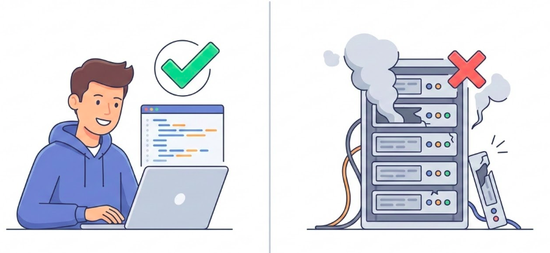Figure: Local vs. Production environment gap.
- Local: You control everything.
- Production: The untamed wild.
- Goal: Bridge the gap reliably.
The Road to Production
- Configuration: Separating secrets from code.
- Platform: Hosting on Railway (PaaS).
- Database: Managed storage & networking.
- Automation: Continuous Deployment interactions.
- Diagnostics: validation & logs.
Part 1: Mental Models
Configuration: Code vs. Environment
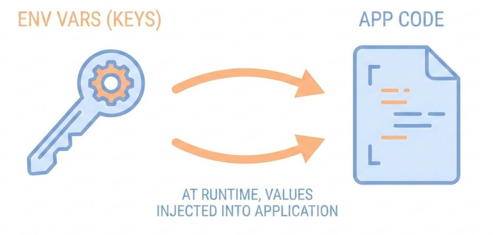Figure: Separation of code and configuration.
Rule: Code and Config must be strictly separated.
Python:
Why: Security (Secrets) & Flexibility.
The Binding Contract: Host & Port
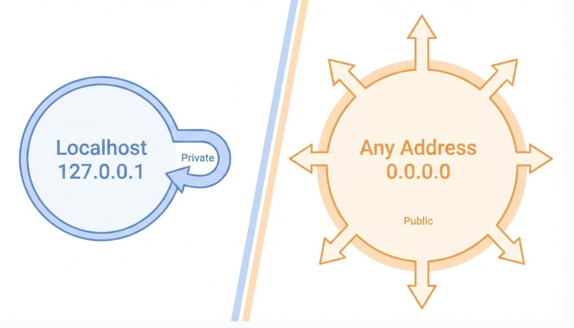Figure: Localhost vs. Public interface binding.
- 127.0.0.1 (Localhost): Listening inside the house (Loopback).
- 0.0.0.0 (Any): Listening at the front door (Public).
- $PORT: The specific door number assigned by the cloud.
The Start Command

Figure: The web server start command.
- Purpose: Tells the platform how to run your app.
- Procfile: Standard file for run commands (
web: uvicorn ...). - Flags:
--host 0.0.0.0and--port $PORT.
About Railway
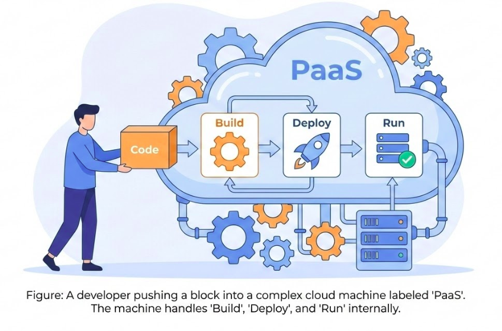Figure: PaaS deployment workflow.
- Flexible Sources: Deploy from Repo (Code) or Registry (Docker Image).
- Hassle-Free: Sane defaults & Zero Config out of the box.
- Operational Model: “Push to Deploy” with built-in observability.
Provisioning PostgreSQL
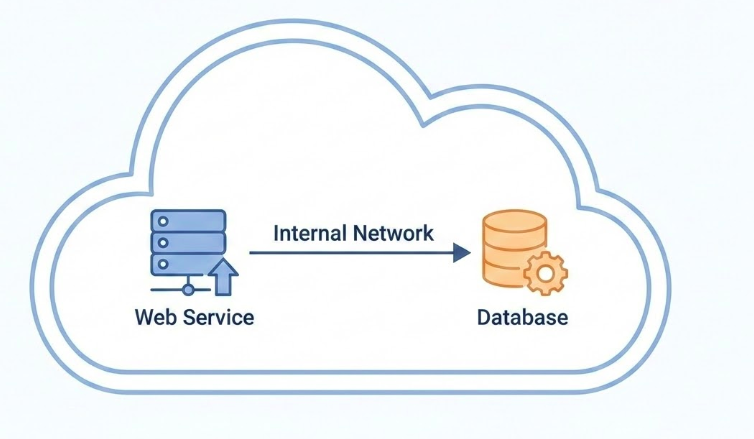Figure: Internal networking between services.
- Managed Service: Automated backups, updates, and scaling.
- Internal Networking: Secure communication (private IP).
- Connection:
DATABASE_URLenv var auto-injected.
Part 2: Execution Walkthrough
Step 1: Preparation
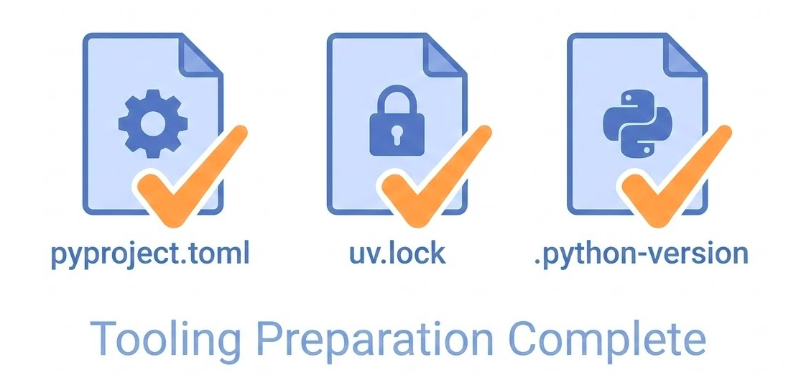Figure: Python project dependency manifests.
- pyproject.toml: Project metadata & dependencies (managed by
uv). - uv.lock: Lockfile for reproducible builds.
- Procfile: Defines the start command (e.g.,
web: dbmate --wait up && uvicorn ...).
Step 2: Connection
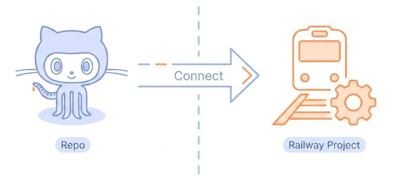Figure: Connecting GitHub to the deployment platform.
- Source: Connect GitHub account.
- Repo: Select your project repository.
- Trigger: “Deploy Now” (starts initial build).
Step 3: Variables
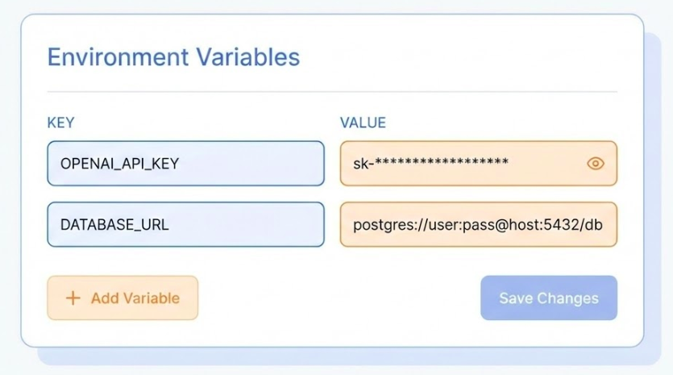Figure: Configuring environment variables.
- Dashboard: Go to “Variables” tab.
- Secrets: Add
OPENAI_API_KEY, passwords, etc. - Redeploy: Changing variables triggers a restart.
Step 4: Provision Database
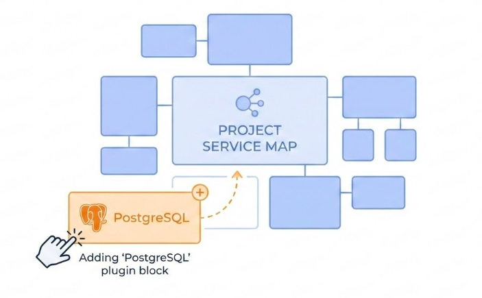Figure: Provisioning a managed database service.
- Action: Add “PostgreSQL” service (Plugin).
- Wiring: Railway auto-injects
DATABASE_URLvariable. - Migrations: Handled via
dbmateon startup.
Step 5: Verification
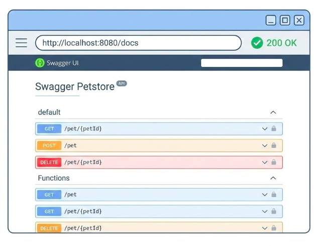Figure: Verifying the deployed API.
- Public URL:
https://your-project.up.railway.app - Routes: Check
/docsfor Swagger UI. - Test: Make a live request.
Continuous Deployment & Environments
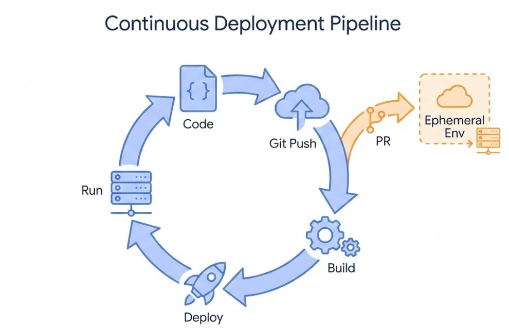Figure: Continuous Deployment lifecycle and environments.
- Trigger:
git pushtriggers build & deploy. - Environments: Supports Static (Prod) and Ephemeral (PR Previews).
- Workflow: Test changes in a unique URL before merging.
Diagnostics: When Things Break
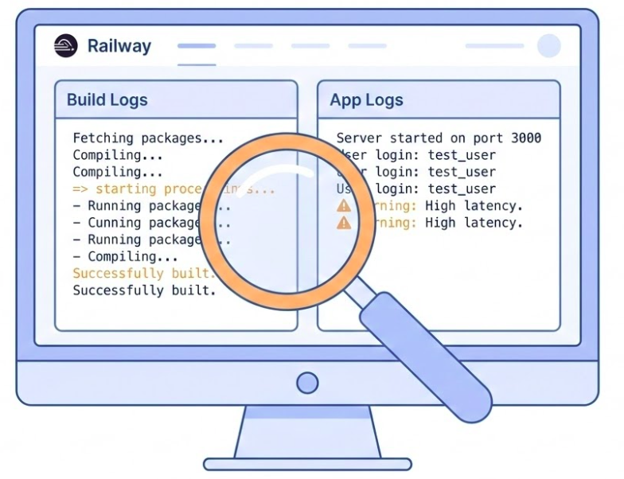Figure: Monitoring build and application logs.
- Build Logs: Why did the build fail? (e.g., missing dependencies).
- Deploy Logs: Why did the container crash? (e.g., migration failures).
- Web Console: Real-time feedback on migrations & startup.
Key Takeaways
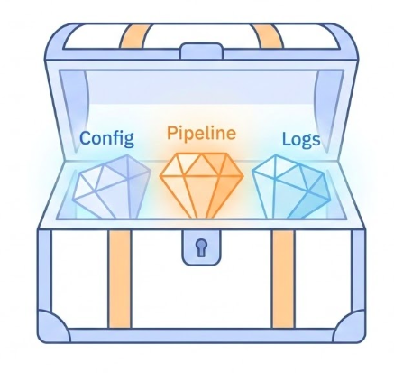Figure: Key takeaways for successful deployment.
- Separate Config: Use Env Vars, never hardcode secrets.
- Trust the Platform: Let PaaS handle the infrastructure.
- Automate:
git pushshould be your only deployment command. - Observe: Logs are your eyes and ears in production.